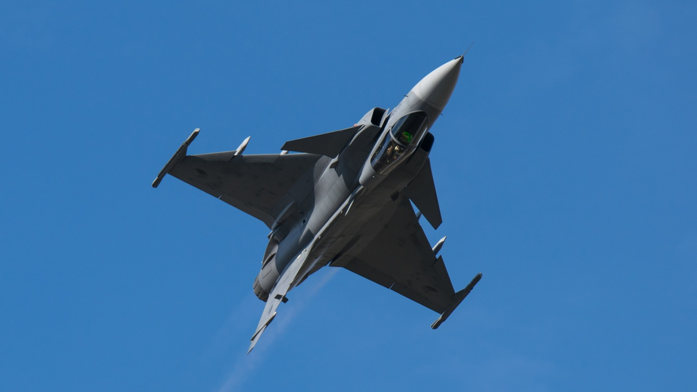
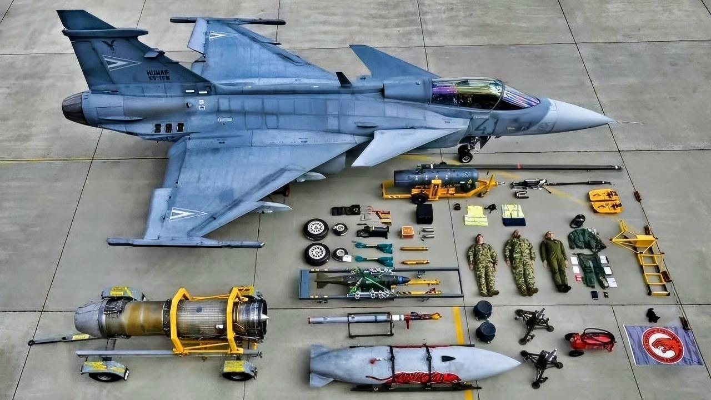
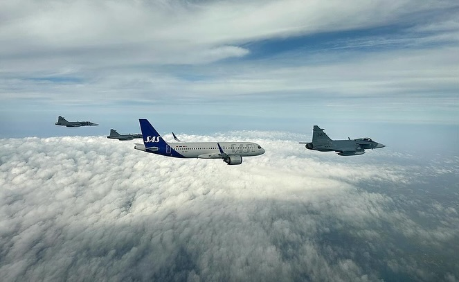
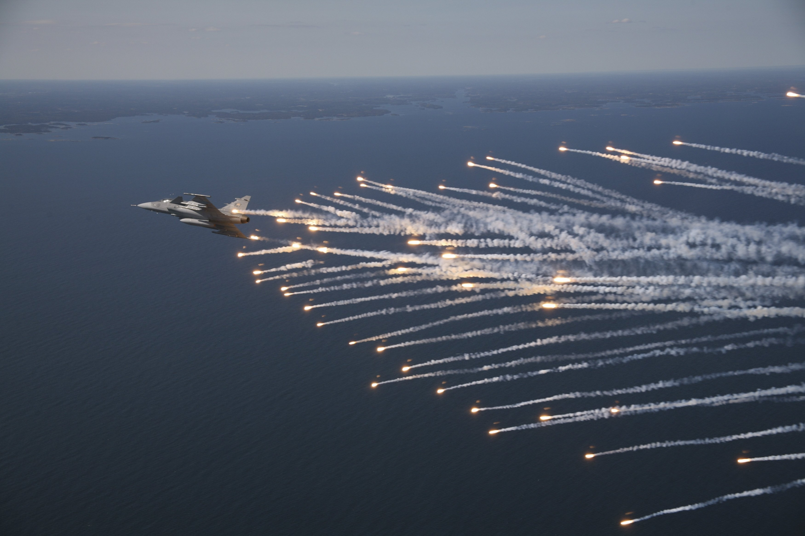

Air Superiority Redefined
JAS 39 Gripen är ett av världens mest avancerade multirole-stridsflygplan. Utvecklat av Saab för att möta framtidens luftstrid kombinerar Gripen hastighet, precision och avancerad teknologi i ett kompakt system.
Flygplanet är designat för att kunna operera i krävande miljöer med minimal markpersonal och snabb återstart mellan uppdrag. Detta gör Gripen till ett strategiskt verktyg för nationer som vill skydda sitt luftrum med maximal flexibilitet och effektivitet.

Kapabiliteter
Tre kärnuppdrag.
Luftförsvar
Gripen kan snabbt identifiera och möta hot i luftrummet med avancerad radar och vapensystem.
Air DefencePrecision Attack
Flygplanet kan slå mot mål med hög precision och modern vapenteknik oavsett väderförhållanden.
StrikeSpaning
Gripen kan samla underrättelser i realtid och dela information via datalänkar med marksystem.
ReconnaissanceVarför välja Gripen?
Extrem manöverförmåga
Gripen är byggd för att dominera i luftstrid. Det avancerade flygkontrollsystemet gör att piloten kan utföra snabba och precisa manövrar även under extrema belastningar.


Snabb operativ start
Gripen kan tankas, laddas med vapen och starta igen på bara några minuter. Detta gör att flygplanet kan genomföra fler uppdrag per dag än många andra stridsflygplan.
Byggd för modern krigföring
Med avancerad radar, sensorer och datalänkar kan Gripen dela information i realtid med andra flygplan och marksystem. Detta skapar ett nätverk av information som ger piloten ett taktiskt övertag.

Tekniska specifikationer
Gripen i aktion






Redo att uppleva framtidens luftförsvar?
Gripen representerar nästa generation av effektiv luftmakt. Upptäck hur svensk ingenjörskonst kan förändra luftstrid.